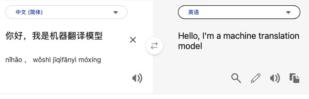
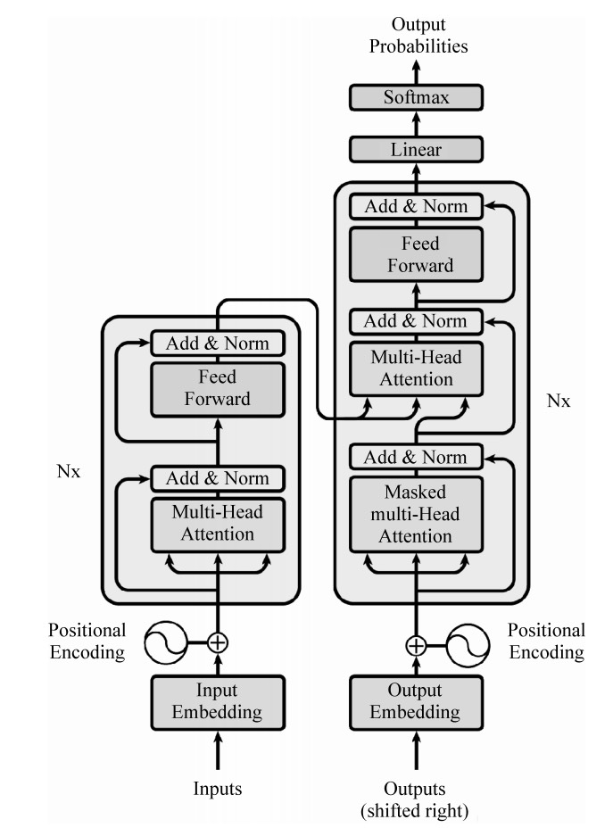
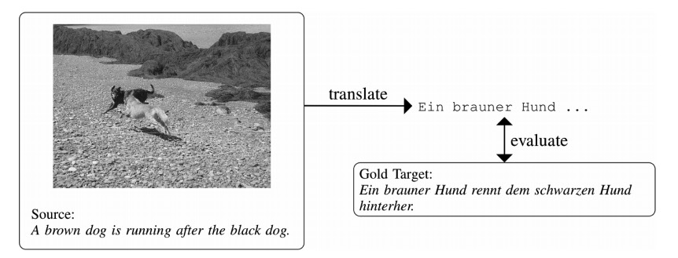

神经机器翻译
Neural Machine Translation

机器翻译是指通过计算机将源语言句子翻译到 与之语义等价的目标语言句子的过程,是自然语言处理领域的一个重要研究方向。 1949年,Warren Weaver在《翻译》中提出了使用机器进行翻译的思想,自此引发了该方向的研究热潮。机器翻译主要可以分为三种方法：基于规则的机器翻译、基于统计的机器翻译和基于神经网络的机器翻译。 最初, 基于规则的方法是机器翻译研究的主流,这种方法对语法结构规范的句子有较好的翻译效果,但其也有规则编写复杂、难以处理非规范语言现象的缺点。20世纪90年代初,IBM的PeterBrown等人发表了两篇重要论文, 正式提出基于噪声信道模型的统计机器翻译模型。进入21世纪,深度学习等机器学习方法逐渐成熟,并开始被应用于自然语言处理领域。2013年,Kalchbrenner和Blunsom提出利用神经网络进行机器翻译，随着计算机算力 的提升，基于序列到序列（Seq2Seq）的神经网络模型逐渐成为了神经机器翻译系统的技术主流。
Machine translation is the process of using computer to translate source language sentences to semantically equivalent target language sentences, and is an important sub-field in the field of NLP. In 1949, Warren Weaver put forward the idea of using machines for translation in Translation, thus triggering a research boom in this area since then. Machine translation can be mainly divided into three categories: rule-based machine translation, statistical-based machine translation and neural network-based machine translation. At the very beginning, rule-based approach is the mainstream of machine translation research, which can lead to better translation for sentences with standardized grammatical structure. However, every coin has two sides. The disadvantages lie in its complicated rule writing and its weakness in dealing with non-standardized language phenomena. In the early 1990s, Peter Brown and others from IBM published two important papers, formally proposing the statistical machine translation model based on the noise channel model. In the 21st century, machine learning methods such as deep learning have gradually matured and started to be applied to natural language processing. In 2013, Kalchbrenner and Blunsom proposed the idea of applying neural networks to machine translation. With the improvement of computer computing power, Seq2Seq-based neural network models gradually became the mainstream in neural machine translation systems.
主流机器翻译技术 Mainstream Machine Translation Technologies
近年来，随着Transformer模型的提出，自然语言处理领域的基础架构模型从传统的时间序列网络转变为了Transformer-based的网络架构，在神经机器翻译领域也不例外，该模型是由Encoder（编码器）和Decoder（解码器） 组成，基于其强大的语义编码能力，也符合神经机器翻译传统的序列到序列（Seq2Seq）的模型框架，因此在落地场景中，越来越多的神经机器翻译模型都以该模型作为基础架构去进行训练和落地。
In recent years, with the introduction of Transformer model, the infrastructure model in the field of natural language processing has shifted from traditional time-series network to Transformer-based network architecture. It is no exception in the field of neural machine translation. The Transformer-based network architecture is composed of Encoder and Decoder, based on its powerful semantic encoding capability, and also conforms to the traditional Sequence-to-Sequence (Seq2Seq) model framework of neural machine translation. As a result, it has been increasingly used in neural machine translation models as the infrastructure for training and landing.
神经机器翻译任务应用场景和挑战
Neural Machine Translation Task Application Scenarios and Challenges
文本机器翻译
Text Machine Translation
现如今，随着互联网的日益普及和全球化趋势的不断推进，世界各国的交流也随着日渐兴起的旅游业，以及跨国商业交易等需求变得密集了起来。因此，不同国家的人们需要交流的时候，质量良好的翻译便变成了日益增加的科技需求。虽然现如今的神经 机器翻译技术日趋成熟，落地应用也随处可见，但是在翻译质量上，还是存在着不少的挑战，例如书面语和口语的翻译需要根据场景的不同得到符合对应需求语境的翻译。
Nowadays, communication between countries around the world has become intensive with the increasing popularity of the Internet, globalization, and the growing demand for tourism and cross-border business transactions. Therefore, when people from different countries need to communicate, good quality translation is increasingly becoming a technological necessity. Although currently neural machine translation technology is getting mature and its applications are ubiquitous, there are still many challenges in translation quality. For example, written and spoken texts needs to be translated according to the scenario to meet the needs of the context.
同声传译
Simultaneous Interpreting (SI)
在同声传译的场景下,为了降低翻译的延迟,模型需要在输入语句不完整的情况下输出译文,使用户能在低延迟内收到高质量的翻译结果。翻译质量和延迟一般是互斥的,在翻译前等待的时间越长,得到的源端信息越完整,翻译质量通常就越高,但延迟也就越高。 因此，在翻译质量和翻译时间延迟上面如何权衡，也是同声传译应用场景下的应用神经机器翻译模型中比较具有挑战性的地方。
In simultaneous interpretation (SI), in order to reduce the delay, the model needs to generate the output when the input statement is incomplete, so that the users can receive a high-quality translation result with low delay. Translation quality and latency are generally exclusive. The longer the waiting time before production, the more complete the information obtained from the source, the higher the translation quality will be, but the higher the latency will be as well. Therefore, one of the challenges of applying neural machine translation models in SI lies in the trade-off between translation quality and translation time delay.
多模态机器翻译
Multimodal Machine Translation
除文本外,有时也存在图像、视频等其他模态的信息可供使用,多模态翻译系统同时将源端文本和 其他模态的信息作为模型输入,翻译系统在其他模态信息的辅助下进行翻译。WMT在2016到2018年连续三次将多模态机器翻译作为共享任务,这项任务也受到了研究者的广泛关注。 在多模态机器翻译中，如何更好地利用多个模态的信息进行交互，如何让模型参考到更有价值的多模态信息并将其转化为更高质量的翻译，在该任务中也是比较具有挑战性的地方之一。
In addition to text, there are other modalities available, such as images and videos. The multimodal translation system takes both the source text and other modalities as model inputs, and the translation system functions with the assistance of the other modalities.WMT has made multimodal machine translation a shared task for three consecutive times from 2016 to 2018, which has also received a lot of attention from researchers. In multimodal machine translation, other challenges include how to better utilize the information of multiple modalities for interaction and how to produce higher-quality translation with more valuable multimodal information.
